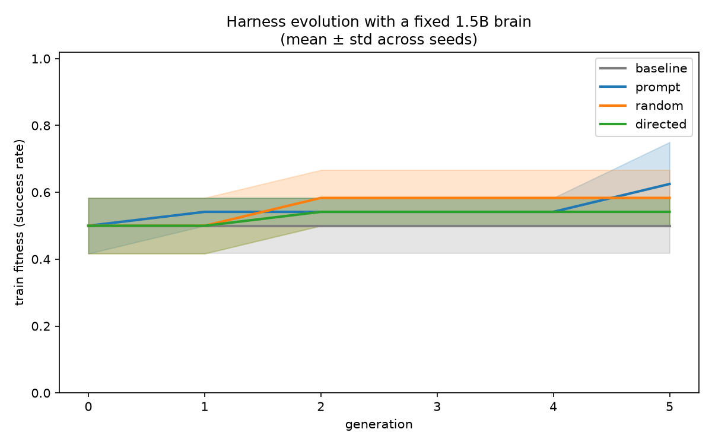
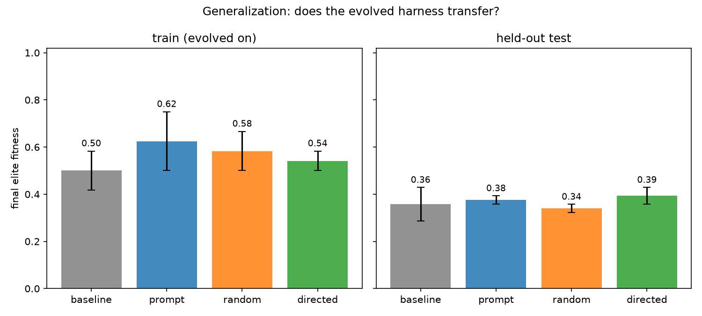
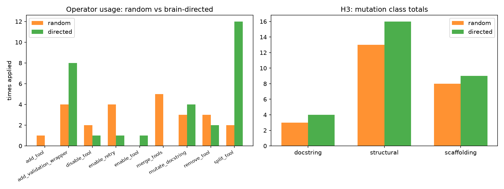
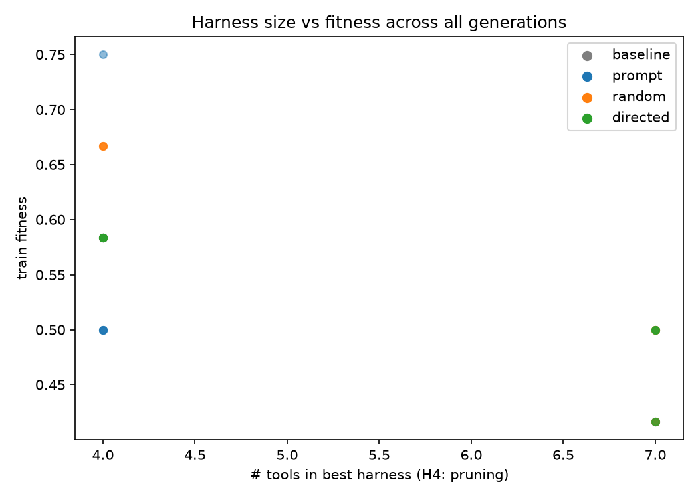

Here is a question from evolutionary biology that has been living rent-free in my head: did the harness come first, or the brain?
Primitive creatures had sensors, limbs, and organs long before they had anything you'd call a brain — and those bodies weren't dumb scaffolding waiting for a controller. They sensed, moved, and survived. The brain arrived later, as a thin layer on top of a body that already knew how to act.
Now swap in the AI vocabulary. The brain is the language model. The harness is everything around it: the tools, their descriptions, the scaffolding — retries, validation, the prompts that tell the model how to call things. When an agent fails today, we usually reach for a bigger brain. But what if the right move — the evolutionarily older move — is to evolve the harness instead, and let the fixed brain decide, through selection pressure, which limbs to keep?
That's what this project tested. Not as an essay. As an experiment, with pre-registered hypotheses, a fixed 1.5-billion-parameter "primitive brain," and real numbers.
I.What biology already knows
The biological answer to "harness or brain first?" is not close. The first nervous systems were not brains at all — they were diffuse nerve nets, like the ones still found in Hydra and jellyfish: body-wide sensing-and-acting substrates with dedicated circuits for feeding, contraction, and light, hundreds of millions of years before centralization, before cephalization, before anything like a head.
And even at the peak of invertebrate intelligence, the brain stayed a minority partner. The octopus has roughly 500 million neurons — but only about 40 million sit in the central brain. Two-thirds live in the arms. Severed octopus arms keep reaching, grasping, and recoiling from harm with no brain involved at all. Evolution built its most autonomous, highest-bandwidth control systems in the periphery, not the head.
"Much of what looks like intelligence is actually the body doing the work."
This is the core claim of embodied cognition and morphological computation (Pfeifer & Bongard, How the Body Shapes the Way We Think): push cognitive workload out of the central controller and into the body wherever the morphology allows it. Michael Levin's basal-cognition work pushes it further — goal-directed information processing in cells and tissues via bioelectric networks, before neurons existed at all. The infrastructure for goal-directed behavior came first. The centralized controller is a late, thin layer.
So biology gives us a design pattern — call it the octopus architecture: a fixed, modest central controller made dramatically more capable by growing the periphery. That is the biological license for the experiment below.
II.The AI literature already votes harness
Read the self-improving-agents literature with one question in mind — what actually gets evolved? — and a striking regularity appears: almost never the weights. Almost always the harness.
- Voyager (2023) kept GPT-4 fixed and grew an ever-expanding skill library of executable code — 3.3× more unique items, 15× faster tech-tree progress, zero weight updates. Fix the brain, evolve the harness, capability compounds.
- The Darwin Gödel Machine (2025) is a coding agent that rewrites its own Python codebase — tools, workflow, prompting, explicitly not the weights — and climbed from 20% to 50% on SWE-bench. Its key ablation: an archive of past variants beats greedy hill-climbing.
- GEPA (2025) evolves prompts reflectively and beats reinforcement learning on weights by 6% while using 35× fewer rollouts. Evolving the harness in language-space is now competitive with updating weights, at a fraction of the cost.
- Promptbreeder, OPRO, DSPy, TextGrad, AFlow, Alita — prompts, workflows, agent code, tools, memories. The entire field is, read one way, a decades-long answer to "harness or brain?"
Industry converged independently. Mitchell Hashimoto's formula — "Agent = Model + Harness" — with the maxim: every time the agent makes a mistake, engineer it so it never makes that mistake again. Anthropic frames the model as the engine and the harness as the car. The product, the reliability, the compounding advantage — they all live in the layer around the model.
The literature told us what to evolve. It didn't tell us how the brain should choose — what selection mechanism lets a fixed model decide which tools to keep, prune, or reshape. That's the gap we ran at.
III.The experiment
We built a synthetic tool-use benchmark — 40 tasks across four families (arithmetic, string manipulation, unit conversion, list operations) — and a fixed "primitive brain": Qwen2.5-1.5B-Instruct, a small open model, greedy decoding, never mutated. The parallel to biology is deliberate. Primitive creatures had tiny controllers; the question is what evolution can do with the body around one.
Each agent individual carries a harness: a set of tools (some genuinely useful, some distractors like approx_calc and noop_tool), each tool's docstring, and scaffolding — retry logic, validation wrappers, and the global instruction preamble. We ran four evolutionary arms for 6 generations, population 6, across 2 seeds, selecting on a 12-task training split and scoring the final elites on a 28-task held-out test split:
- baseline — selection only, no mutation. The control.
- prompt — only the global instruction preamble evolves.
- random — full harness mutation (9 template operators: add/remove/split/merge tools, rewrite docstrings, add validation, enable retries…), random choice + tournament selection.
- directed — the same fixed brain reads failure traces and chooses which harness operator to apply. The brain as its own evolutionary pressure.
Four hypotheses were pre-registered before the first run:
With the brain fixed, evolving the harness (random arm) beats evolving the instruction preamble alone. Result: prompt-only won on both train (0.625 vs 0.583) and held-out test (0.375 vs 0.339).
Brain-directed harness mutation beats random mutation + selection. Result: directed generalized best on test (0.393 vs 0.339) despite training worse than random (0.542 vs 0.583) — a curious signal worth a bigger run.
Tool description/docstring mutations contribute more than structural add/remove. Result: structural operations dominated (13–16 uses vs 3–4 docstring edits). The showcased docstring evolution was literally a no-op rewrite.
Selection pressure removes unused/misleading tools. Result: 5 of 8 final elites pruned all three distractors; 3 (all from seed 1) kept every one of them.
The numbers
Final elite fitness, mean ± std across 2 seeds. Bold marks the best arm per split.
| Arm | Train fitness | Held-out test fitness |
|---|---|---|
| baseline (control) | 0.500 ± 0.083 | 0.357 ± 0.071 |
| prompt-only | 0.625 ± 0.125 | 0.375 ± 0.018 |
| random harness | 0.583 ± 0.083 | 0.339 ± 0.018 |
| brain-directed | 0.542 ± 0.042 | 0.393 ± 0.036 |


IV.What the brain chose to grow
The headline verdicts are humbling for the harness-first hypothesis — with a weak fixed brain, clearer instructions beat better tools. But the most interesting finding isn't a verdict. It's a taste.
When the brain got to choose its own mutations, it didn't behave like random search. It overwhelmingly reached for two operators: split_tool (12 applications) and add_validation_wrapper (8). It decomposed tools into smaller pieces and bolted guardrails onto them — finer-grained, safer limbs — while random mutation preferred merging tools together. Given the same evolutionary pressure, the model and the coin flip designed in opposite directions.


V.Caveats and next steps
Honesty first: n=2 seeds is thin, every between-arm gap sits inside the error bands, and absolute scores are low — a 1.5B model is a genuinely primitive brain, and the benchmark was hard for it. The docstring-evolution showcase was a no-op. Nothing here is statistically settled; it's a first probe, pre-registered and fully reproducible.
What's next: a 7B-class brain to test whether harness evolution wakes up once the controller can exploit tool structure; more seeds; a richer, messier benchmark closer to real agentic work; and an archive-based selector (à la Darwin Gödel Machine) instead of plain tournament selection. The code, configs, raw CSVs, and figure scripts are all public in the evo-harness repo — reproduce it, break it, extend it.
Biology's answer stands: the harness came first, and most of the action stayed in the harness. Our small experiment suggests a refinement rather than a rebuttal — which layer matters most depends on how much brain you have. Give evolution a weak controller and it reaches for instructions. Give the brain a vote on its own body, and it starts splitting limbs and adding guardrails. The octopus would approve.